Blocking
B-01
top-level reference/warning role 부재
폭염 참고·중단·신고 정보가 현재 generic projection에서는 완료 가능한 할 일이 될 수 있다.
해결
additive itemRole + destination eligibility. 준비 전 안전 사례 public 활성화 금지.
Independent production + source review
P27의 완료·복구·반복·Calendar·export 계약은 보존한다. P28은 긴 Flow의 전체 확인, 콘텐츠별 primary artifact, 비실행 참고정보의 역할을 저장 전에 하나로 통합해야 한다.
46e567e, application source는 45b1f42이며 두 commit 차이는 handoff 문서뿐이다. 정본 요구사항 누락은 0이다.Promise matrix
15개 약속을 production interaction과 current source로 다시 분류했다.
| 약속 | 상태 | production/source 판정 | 다음 slice |
|---|---|---|---|
| 저장 전 전체 Flow | partial | 5개 source Flow는 전체, 24개 public Flow는 5 + 외 19개 | P28-01 |
| 저장 결과 예측 | partial | 개수·일부 날짜는 보이나 전체 제목과 destination 손실은 분산 | P28-01 |
| 제목·항목·날짜·순서·포함 조정 | complete | 24개 전체 행, 4개 조정 mode 확인 | P28-03 polish |
| content-native result first | partial | artifact plan은 있으나 save/export 정책과 분리 | P28-02 |
| 실데이터 artifact 비교 | partial | 구현 Flow만 가능, 대표 4 source는 miss | P28-01/06 |
| 의미 없는 결과 숨김 | partial | generic item은 checklist/sheet/memo에 광범위하게 포함 | P28-02 |
| receipt ↔ My Flow 문법 | complete | 저장 요약과 동일 workspace 연결 | 유지 |
| My Flow 탐색·전체 구조 | complete | 1~4 직접 browse, 5+ 검색/필터 | P28-04 wide |
| series·occurrence | complete | 4주 preview와 종료일 없음 분리 | 회귀 고정 |
| 삭제·복구 | complete | 보관/제외/tombstone의 가역 경로 | 유지 |
| action·confirmation·resource | partial | nested role은 분리, top-level role은 없음 | P28-02 |
| Calendar Flow filter | complete | scope/grid/agenda 일치 | 회귀 고정 |
| same-date grouping | complete | My Flow·Calendar에서 유지 | 회귀 고정 |
| 전체·선택·개별 export | complete | scope와 destination count 사전 표시 | P28-05 eligibility |
| 저장 전 기본 명료성 | partial | 기능은 있으나 전체/primary/required value 위계 부족 | P28-01/03 |
Five content journeys
탭을 바꾸면 current 지원 상태와 권장 첫 결과가 실제 데이터 형태로 바뀐다.
Save-before workspace
Severity findings
앱 전체의 문제가 아니라 저장 전 약속을 깨뜨리는 계약과 연결 문제다.
B-01
폭염 참고·중단·신고 정보가 현재 generic projection에서는 완료 가능한 할 일이 될 수 있다.
해결
additive itemRole + destination eligibility. 준비 전 안전 사례 public 활성화 금지.
H-01
/f/moving-d30-basic, 390px. 조정 화면을 열어야 24개 전체를 확인한다.
해결
canonical complete outline과 1회 펼치기. 5개 slice 제거.
H-02
primary surface는 계산하지만 generic visible item은 checklist/sheet/memo에 넓게 포함된다.
해결
artifactPolicy를 save-before부터 export까지 공유.
H-03
K-MOOC, 폭염, 계약, 여행은 가짜 생성 없이 정직하게 멈추지만 content-native UX를 검증할 수 없다.
해결
계약 후 source·rights·safety gate를 통과한 fixture만 등록.
H-04
4개 장소가 3개 문장 항목으로 분할되고 artifact preview 없이 parser 보정부터 요구한다.
해결
감지 범위 확인, ordered checklist, 시간 입력 후 Calendar 승격.
M-01~04
기능은 맞지만 긴 Flow receipt, contextual value, 1024 master-detail에서 추가 정리가 필요하다.
해결
P27 동작을 유지하고 view model과 layout만 수렴.
Current vs proposed
긴 설명을 추가하지 않고 outline, artifact, 필요한 값, 결과 CTA의 위치로 해결한다.
Alternative decision
총점만이 아니라 cold-start와 실제 작업 전환을 함께 본다.
첫 이해는 쉽지만 모바일과 콘텐츠 확장성이 약하다. 다섯 사례를 영구 IA로 만들지 않는다.
Flow를 찾은 뒤 가장 좋다. empty 첫 방문자에게 결과 예시가 부족하다.
empty에는 composer와 작은 예시, 감지 후에는 B로 전환한다. 전략 적합성이 가장 높다.
Responsive wireframe
이전 artifact의 고정 3열은 1024에서 5/5 overflow. 의미만 보존한다.
Data and regression boundary
identity는 다시 만들지 않고 role·eligibility·view model만 additive하게 확장한다.
| 변경 | 현재 가능성 | migration | 회귀 방어 |
|---|---|---|---|
| SaveBeforeProjectionVM | public/source-backed adapter로 가능 | 없음 | save-before/receipt/My Flow count parity |
| itemRole | top-level 계약 없음 | legacy action default, 대표 content backfill | non-action completion/export 0 |
| artifactPolicy | artifact-plan을 초기 resolver로 재사용 | runtime derive 가능 | five-case fixture |
| pre-save adjustment | PersonalStructuralOverlay 재사용 | 없음 | cancel write 0, atomic save |
| My Flow/Calendar/export | P27 기반 완성 | 없음 | P27 targeted + full E2E 유지 |
P28 execution program
각 slice의 상세 범위·비범위·acceptance는 p28-backlog.md에 있다.
공통 view model, 24개 complete outline, primary artifact, 결과 단위 CTA. persistence 변경 없음.
itemRole, artifactPolicy, destination eligibility. 안전 참고정보를 완료·Calendar에서 제외.
필요한 값, 변경된 항목, 전체 상세 순서. ephemeral overlay와 atomic save.
1024 inventory + selected Flow, 모바일 현재 전환 유지. P27 lifecycle 보존.
새 role/policy를 P27 Flow filter, undated, occurrence, export scope에 연결.
sourceTrace, rights, safety, primary/secondary fixture. 추정 생성 금지.
docs, unit, build, targeted/full E2E, production 390/1024, identity/count reconciliation.
Inspectable evidence
필터는 화면 근거를 숨기고 보여줄 뿐 판정을 바꾸지 않는다.
7D608B...A6C0로 일치한다. P27 사용자 피드백 종합이 지적한 archive, recurrence, resource, SSR, My Flow, Calendar, export 문제는 current P27에서 재확인했고, 남은 저장 전 전체 결과 문제만 P28로 승격했다.(10).zip의 최신 관련 P26→P27 보고서가 지적한 /flows loading-only와 /my 5-tab shell은 current production에서 해소됐다. 긴 save-before와 wide density 제안만 이번 P28 근거로 이어받았다. archive root의 P9 review는 최신 근거로 쓰지 않았다.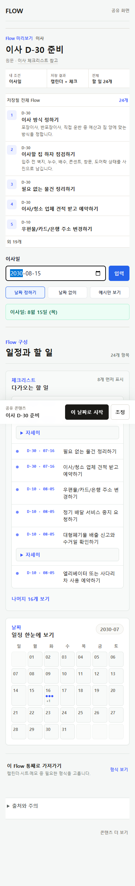
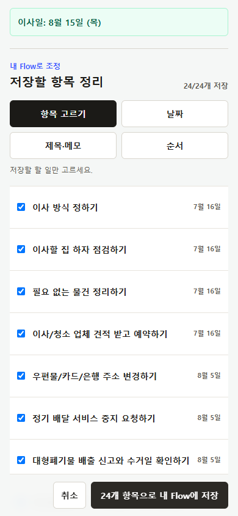
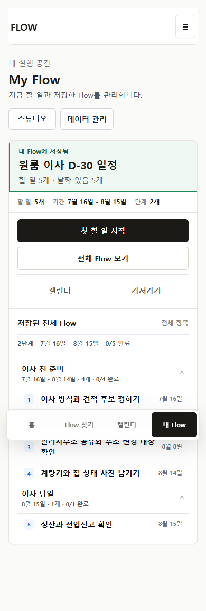
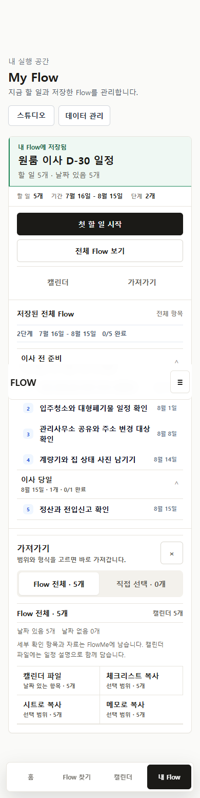
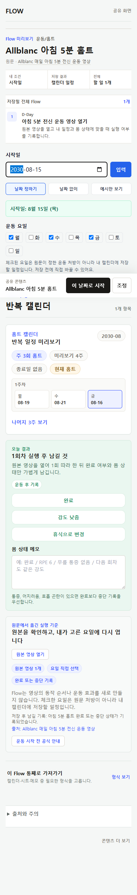
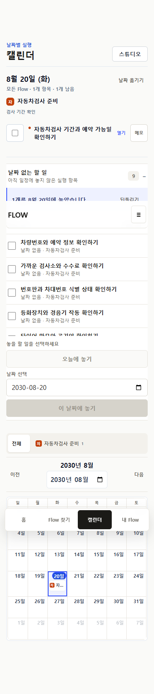
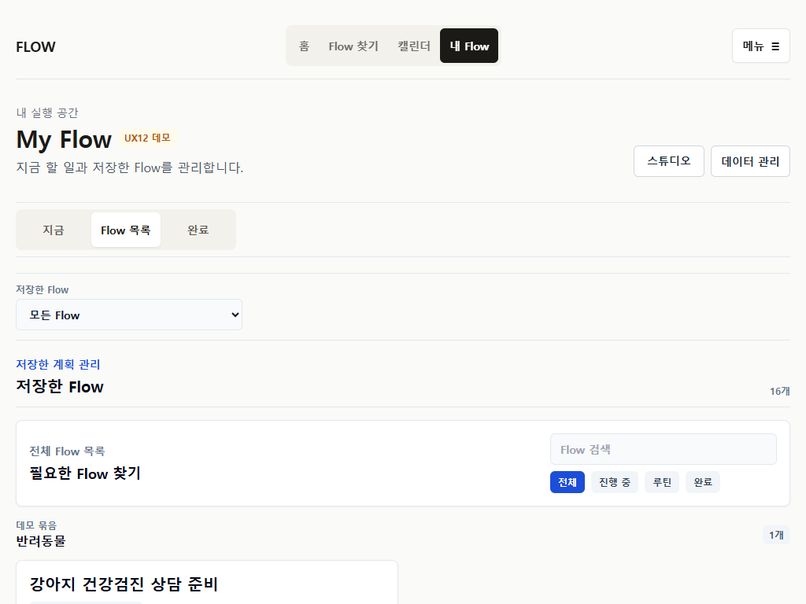
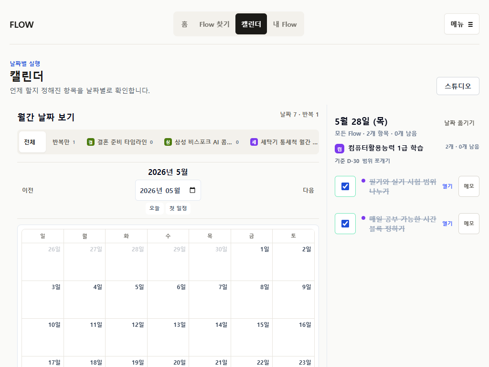
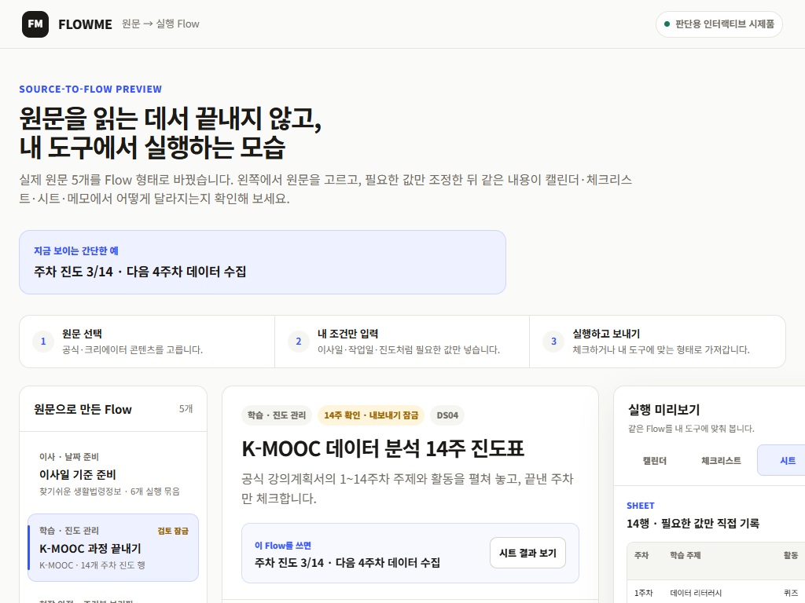
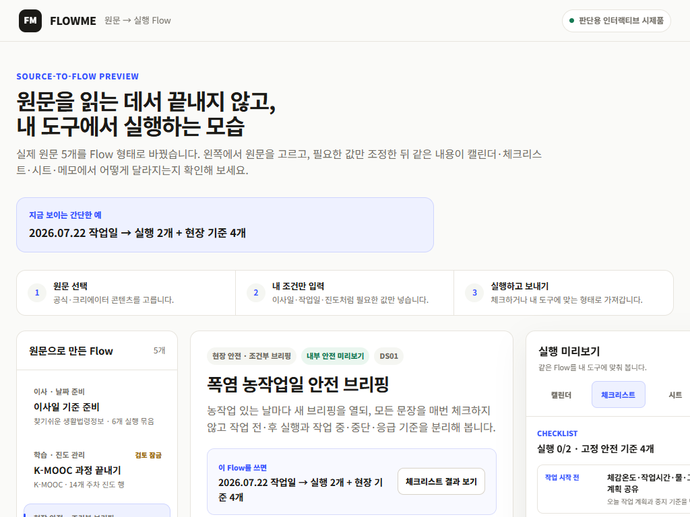
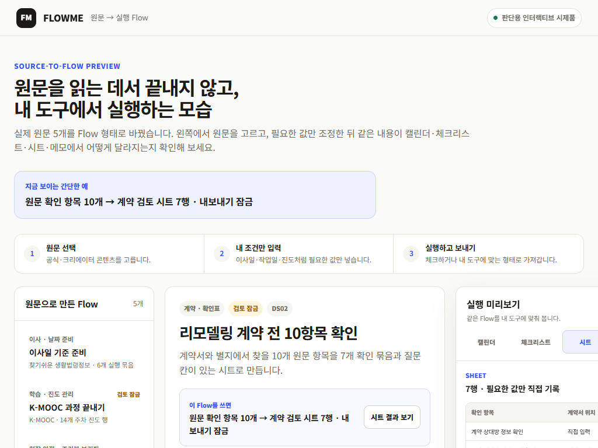
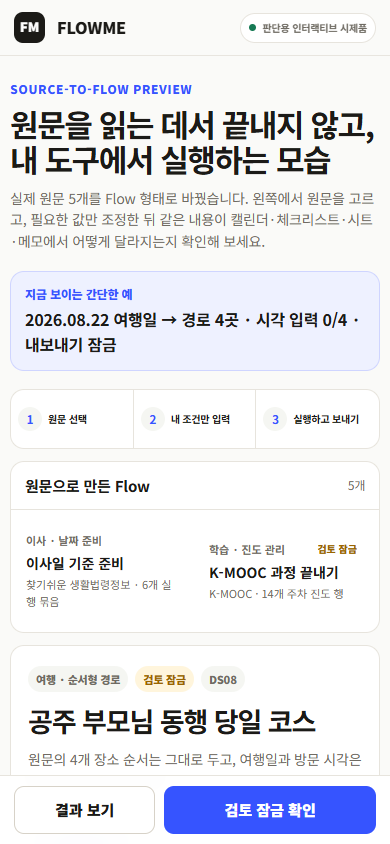
Before observation